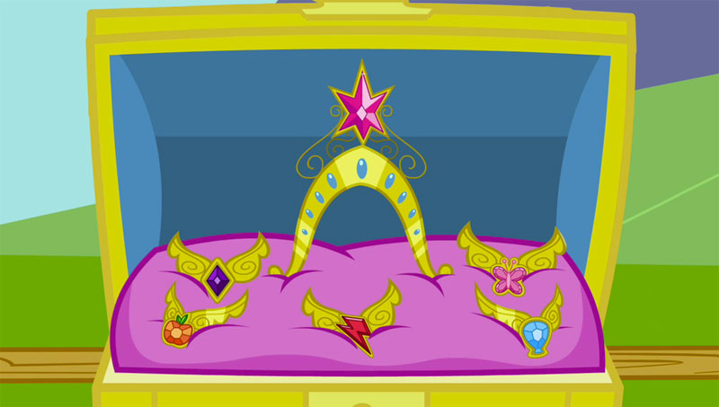
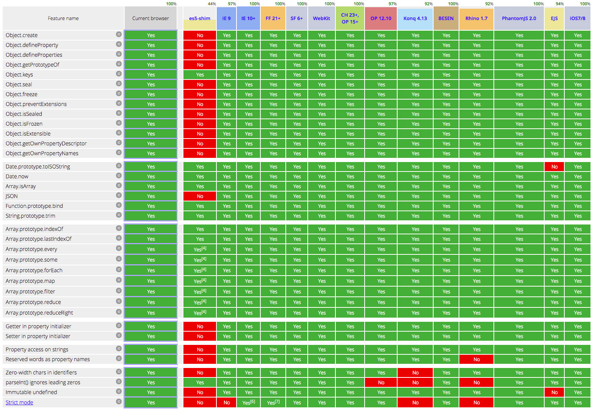
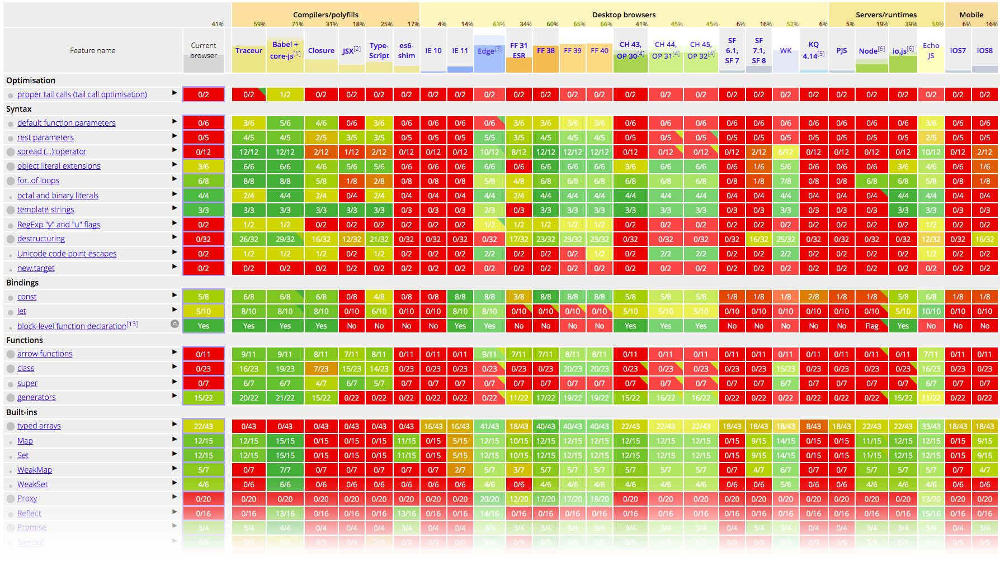
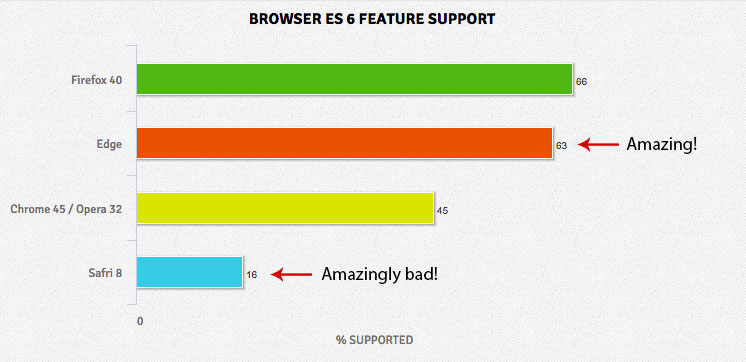
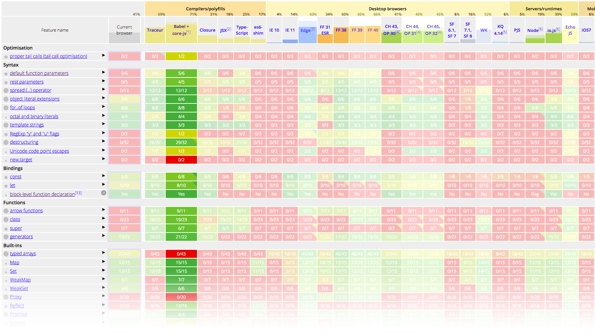
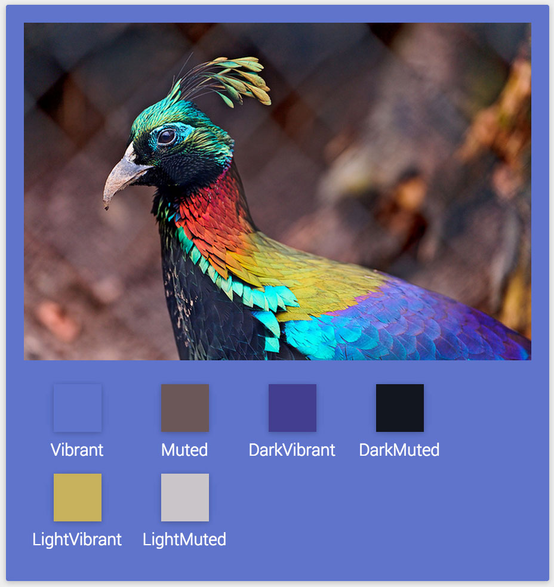

News from the
Bleeding Edge
Browser Pop Quiz
Last version check — May 2015:
Browser Pop Quiz
As of June 24, 2015:
Chrome Highlights
Version 44 (beta)

Firefox Highlights
Version 39 (beta)
- Lots of dev tools improvements
- Minor CSS and JS features

Opera
- Based on Chromium 43
- Primarily a bugfix and consumer feature release

Still in preview, to be finalized with Windows 10 (July 29)
Interesting features added since last month:
- Support for the Dolby
Audio™ media format
- Support for the srcset attribute for responsive images

The Elements of Harmony are six supernatural artifacts representing subjective aspects of
harmony. They are arguably the most powerful force in Equestria.

ES 6 is Final!
- ES 5 standardized in 2009
- First working draft published as "ES.next" on July 12,2011
- Feature-frozen in August 2014
- Approved and published as ECMA-262 6th Edition
on June 17, 2015 by Ecma General Assembly
This is great news for web app developers!
Need a refresher? Excellent intro to ES 6 via code examples
Trivia Question
What does "ECMA" stand for?
Trivia Question
ECMA = European Computer Manufacturers Association
- Founded in Geneva in
1961, became Ecma International in 1994
- Netscape turned over JavaScript to Ecma for standardization in Nov 1996
- The ECMA-262 First Edition was published in June 1997
- "ECMAScript" was a compromise
mainly between Netscape (JavaScript) and Microsoft (JScript)
ECMAScript was always an unwanted trade name that sounds like a skin disease.
— Brendan Eich
Essentially 100% across IE9+, Chrome 23+, FF 21+, Safari 6+ and Opera 12+

Not quite as impressive... yet

ES 6 features supported by major browsers today:

Good news: Babel is available today — covers 71% of ES 6 already

Background
We've been trying to run native code on the web for 20 years
- Java applets
- ActiveX
- Flash
Issues: security, performance, difficult to develop
(Portable) Native Client
- Developed by Google
- NaCl compiles C/C++ to architecture-specific executables (~ActiveX)
- PNaCl produces intermediate bitcode, compiled by the browser (~Java)
Code is sandboxed for security
Compilation is AOT (ahead-of-time) not JIT for near-native performance
Chrome only
- Developed by Mozilla
- Strict subset of JS focused on AOT optimzation / performance
- Static languages like C can be compiled to asm.js, e.g. via Emscripten or Mandreel
Runs in all modern browsers, optimized in FF, Chrome and Edge
Slower than PNaCl, but much faster than vanilla JS
Same security model as JS
A binary format for the web
- Or "wasm" — developed by Mozilla, Google, MS and others
- Essentially asm.js delivered in binary format
- Can be decoded much faster than JS can be parsed, especially on mobile
Why this a Big Deal:
- True cross-platform (asm.js) + native (PNaCl) code
- Backed by all major browser vendors via the W3C WebAssembly Community Group
- Much better compile target than plain JS
- Source will be human-readble
and hand-writable
- Designed to coexist with and enhance, not replace, JS
- Supports synchronous calls to/from plain JS
Using WebAssembly components from JS will be as simple as require'ing a module
Languages, Frameworks & Tools
And now for something completely different...
Extract prominent colors from an image.

←
→
/
#